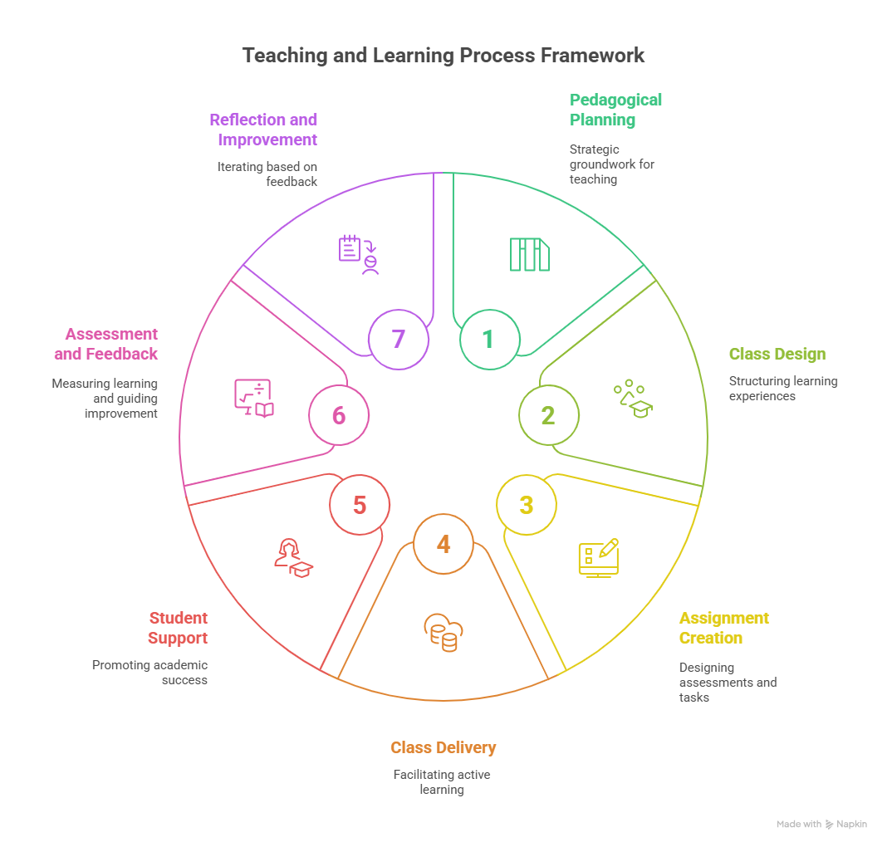

Teaching and Learning Process Framework#

1. Pedagogical-Didactic Planning#
Strategic and intentional groundwork for teaching
Define course goals and learning outcomes
Identify audience and context
Select pedagogical approaches (e.g., active learning, inquiry-based, project-based)
Choose educational technologies and AI-enhanced tools
Align with institutional and ethical guidelines
Create the course Syllabus
2. Class Design and Development#
Structuring the learning experience for clarity, engagement, and progression
Break down content into modules or units
Design and create each class session (objectives, contents, materials)
Create learning strategies
Select and prepare learning materials
Integrate discussion and reflect elements
Create AI-Powered Class Summary Generator
3. Preparation of Assignments and Exams#
Creating opportunities for practice, application, and evaluation
Design formative and summative assessments aligned with learning outcomes
Use rubrics to define performance expectations
Create authentic tasks (e.g., case studies, real-world problems, AI-assisted projects)
Balance low- and high-stakes activities
Ensure accessibility and academic integrity
Use AI to draft, refine, or personalize assignments and quizzes
4. Teaching the Classes (Class Delivery)#
Enacting the instructional plan with flexibility and engagement
Facilitate active, student-centered learning (e.g., discussion, problem-solving)
Use storytelling, examples, demonstrations, and Socratic questioning
Employ tech and AI tools for content delivery (e.g., ChatGPT, simulations, visualizations)
Monitor engagement and comprehension in real time
Adapt pacing and methods responsively
5. Student Support#
Promoting academic success and well-being
Provide office hours and timely responses to inquiries
Offer guidance on assignments and study strategies
Monitor Student Success
Provide AI-curated resources (e.g., study guides, tutoring suggestions)
Encourage peer collaboration and support networks
Introduce AI Tutors
6. Assessment and Feedback#
Measuring learning and guiding improvement
Conduct assessments (projects, exams, portfolios, presentations)
Provide timely, specific, and constructive feedback
Use self- and peer-assessment tools
Incorporate AI for feedback generation, plagiarism detection, or automated grading (as appropriate)
Analyze data to identify learning gaps and misconceptions
7. Reflection and Improvement#
Closing the loop through critical self-analysis and iteration
Reflect on teaching effectiveness using student feedback, learning data, and peer observations
Identify what worked, what didn’t, and why
Revise materials, strategies, and assessments for future iterations
Stay engaged with research and innovations in pedagogy and educational technology
Share experiences with colleagues to foster a culture of reflective teaching